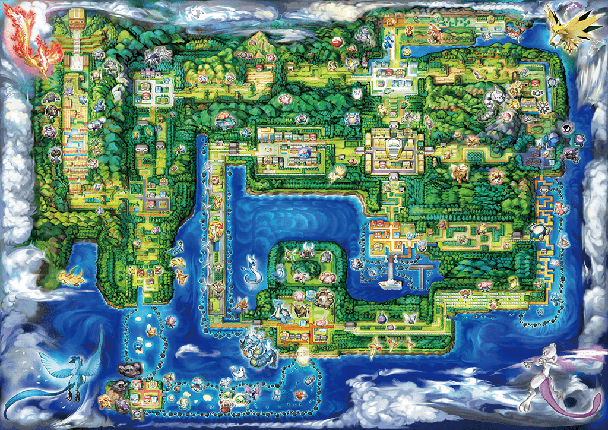

Prêt à savoir tout de tes POKEMON préféré afin d’établir une équipe du tonnerre pour affronter les Maître Dresseur de la région de Kanto, le Professeur Chen m’a demandé d’établir pour toi une sélection de POKEMON que tu pourrais trouver durant ton voyage, voilà un petit coup de pouce pour t’aider dans ta stratégie !

N’hésites pas à compléter ton pokedex en capturant ou en rencontrant les POKEMON sur ta route pour que nous sauvegardons tes découvertes ! Il t’en reste plein à découvrir, il y en a 150 à capturer ! Rien que ça ! Mais le mieux c’est que tu les attrapes tous !